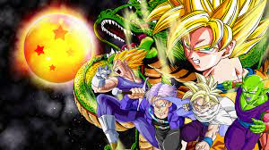

Dragon ballz

Now what can i say that hasen't been said first dbz is iconic,I remember trying to rush
Home from school to catch the latest episode on Toonami
dbz was a big part of my childhood and was one of my gateway animes
Fullmetal Alchemist

Full metal Alchemist, This anime alone got me into the medium. I Remember my first girl friend showing me this on Netflix at the time. I was instantly hooked. its about two brother Edward and Alphonse who try to bring there mother back from the dead using alchemy and pay the ultimate price. This anime follows Edward and alehouses on a journey to restore they’re bodies back to normal
Soul Eater

Soul eater This anime has a simple premise its about a school called the death weapon Mister academy or D.W.M.A for short. This academy is to train misters to kill Kishins who are souls that have gone evil and witches, Then you have weapons who are humans that can turn into weapons that the misters wield. Together they are trying to collect 99 kishin souls and one witch soul so there weapon can become a death weapon. This anime has cool animation fun characters and really good music and sound designs 5/5 would recommend despite the lack luster ending
Naruto
Naruto this anime is of the big three anime during the early 2000s and was another of my gate way amines. The premise is a orphan named Naruto had a Giant nine tailed fox sealed within him and his whole village hates him for it. He wants to become the hokage which is basically a ninja president and the show follows his journey to become the hokage.
Welcome to the N.H.K
Welcome to the N.H.K is a very dark and real anime. Welcome to the N.H.K follows Satsuhiro Sato, a twenty-two-year-old collage drop out who has been a hikigamori which is a condition in which the person has such severe anxiety about people he refuses to leave there home. Sato hasn’t left his home for four years. Because in his delusions from being isolated for so long he believes a lot of conspiracy theories through the show until he meets a young girl named Misaki who believes she can help him. This anime covers a lot of dark topics such as hikigamori, suicide packs, online video game addiction, and even pyramid schemes this anime is a must watch its so underrated